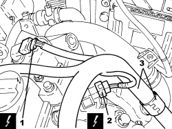
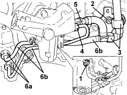

1056F79 FUEL PIPE (DUPLEX) FROM PRESSURE PUMP TO FUEL MANIFOLD - R.R.
- Path
- Procedures > 10 ENGINE > 1056 PETROL INJECTION SYSTEM > 1056F PETROL DIRECT INJECTION SYSTEM > 1056F79 FUEL PIPE (DUPLEX) FROM PRESSURE PUMP TO FUEL MANIFOLD - R.R.
- Kind
- repair procedure (removal / refitting; the operation number is the code)
- Applies to
- engines: 1.9 JTS, 2.2 JTS; all production periods
- Interactive page
- https://sloeber94.github.io/elrnDB/alfa/159/en/#/939005767
Applies to: engines: 1.9 JTS, 2.2 JTS; all production periods
 Removing
Removing
 Refitting
RefittingOp. 1016A10 SOUND-PROOFING COVER - R.R
Op. 5530B52 BATTERY SUPPORT/DRIP TRAY - R.R
1. Detach the electrical connection from the exhaust side timing sensor.
Description | Connector | |
|---|---|---|
1 | Exhaust side timing sensor |
2. Detach the electrical connection from the fuel pressure regulator on the air intake/fuel manifold duct.
Description | Connector | |
|---|---|---|
2 | Fuel pressure regulator |
3. Release the electrical wiring from the band.

Applies to: engines: 1.9 JTS, 2.2 JTS; all production periods
1. Undo the nut securing the fuel pipes to the mounting bracket.
2. Undo the nut securing the fuel pipes mounting bracket.
3. Disconnect the rapid connector and open the fuel tank connection pipe retaining clip, three-way connector side.
4. Undo the connector for the pipe from the pump to the single fuel manifold, pressure pump side.
5. Disconnect the rapid connector for the fuel supply pipe to the pressure pump, pressure pump side.
6. Undo connectors (6a) for the delivery and return pipes, single fuel manifold side, and remove the high and low pressure fuel pipe assembly (6b).

Applies to: engines: 1.9 JTS, 2.2 JTS; all production periods
Refitting
Removing- Place the high and low pressure fuel pipe assembly back in position and tighten the connectors attaching it to the single fuel manifold and the pressure pump.
Component | Fastening | dia | Value (daNm) | Validity |
|---|---|---|---|---|
High pressure pipe from pressure pump to fuel manifold pipe | Connector | M10 | (pressure pump side) 1.7 - 2.3 | 1.9 JTS 2.2 JTS |
Component | Fastening | dia | Value (daNm) | Validity |
|---|---|---|---|---|
Low pressure pipe to fuel pressure pump | Connector | M12 | (fuel manifold side) 1.7 - 2.3 | 1.9 JTS 2.2 JTS |
- Tighten the nuts securing the brackets to the pressure pump and the tappet cover.
- Connect the rapid connector for the fuel supply pipe to the pressure pump, pressure pump side.
- Connect the rapid connector and close the fuel tank connection pipe retaining clip, three-way connector side.
- Secure the electrical wiring with the band.
- Attach the electrical connection to the fuel pressure regulator on the air intake/fuel manifold duct.
- Secure the electrical connection for the exhaust side timing sensor.
Topics linked from this page (5)
- 1016A10 SOUND-PROOFING COVER - R.R
- 5530B10 BATTERY - R+R
- 5530B52 BATTERY SUPPORT/DRIP TRAY - R.R
- K107 EXHAUST SIDE TIMING SENSOR
- N077 FUEL PRESSURE REGULATOR